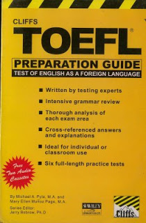

Thai Girl Show, Tentang Manusia dan Batas Kesenangan.
Author: Siwi Mars
---------------------------------------------------------------------------------------------------------------------------------------------------------------------------------

Sekedar iseng survey di Gramedia, sambil membayangkan bukuku selanjutnya mau ditempatkan di rak mana, aku meneliti buku-buku TOEFL yang dijual. Hampir 70% buku
karangan orang Indonesia (dengan penuntun bahasa Indonesia tentu saja).Ada juga buku Barron yang super tebal, harganya 524 rebu plus CDnya
Dan aku terlanjur penasaran dengan buku Cliff, hingga saat sahabatku Asti sedang ke Jogya, langsung saja aku menitip untuk dicarikan kitab pusaka itu.
Ternyata memang tidak gampang mencarinya (di Gramedia nggak ada tuh...), akhirnya setelah ngubek-ubek Taman Pintar akhirnya nemu juga bukunya... Voila!
Buku itu kini di tanganku dan sudah kuubek-ubek isinya.